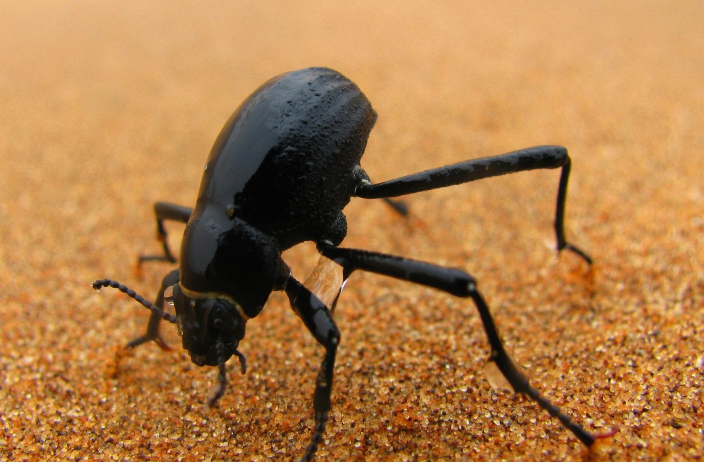
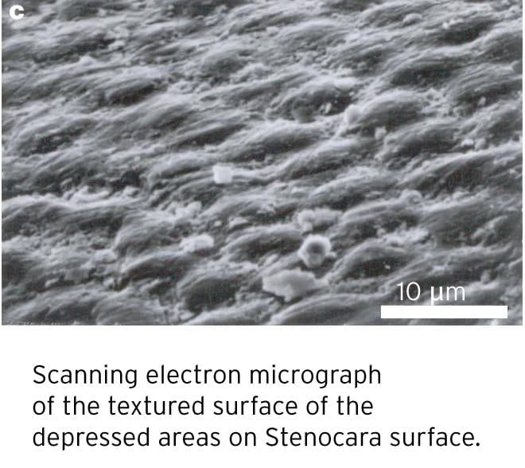

The Water Bender Beetle
How the Darkling Beetle taught us to look at the water crisis differently.
The Problem
How do people in dry or coastal regions where there’s little to no rainfall get enough water? Well, in these areas with fog-heavy winds and dense clouds, they use a technique known as fog harvesting.
Fog harvesting
Fog harvesting is when you use a large mesh to capture water droplets from incoming fog, which then trickles the water down to a trough to be used for crop irrigation, reforestation efforts, and hydration (after proper filtration of course). This method is advantageous because it doesn’t require energy to operate and has little environmental impact when installing. It’s easy to install because of so few materials, which minimizes costs (for transporting freshwater to the area) while improving the quality of life for communities who live in remote areas. However, this technology is not reliable because fog is a seasonal resource, and the amount of water harvested can be hard to predict. The Atacama Desert in Chile is one of the driest places on Earth, averaging less than 5mm of rainfall annually, but they get a lot of fog coming in from the Pacific Ocean. Using these fog catchers, they can generate up to 1400 liters of water per year.

To understand why setting up a bunch of nets can work, we have to look at how nature collects fog. If you’re an early riser like me, and you go outside at dawn, you’ll probably see dew on leaves of plants and trees. You might notice that skinnier/narrower leaves have more dew than fatter ones. This is called the “narrow-leaf syndrome,” where due to the leaf’s smaller boundary layer, wind and fog droplets are able to pass through, instead of going around, this barrier easier. There is higher efficiency per unit area, so skinnier leaves can maximize the amount of water collected per square millimeter. As well, because narrow leaves move more against the wind, it has more micro-turbulence, which pulls more fog droplets from the air current. If we translate these principles to the fog collector meshes, this means that the meshes use ultra-thin threads and balance the material density and aerodynamic permeability to maximize efficiency.
The Beetle

Add Prototype Image
While the current design takes inspiration from leaves, there is another solution that also looks towards nature to solve this problem. Namib Desert Darkling beetles (Stenocara) is a creature I’ve been fascinated with lately. How are they surviving in such dry places? Well, scientists observed a very curious behavior from these beetles when fog rolls into the desert. It turns out that they will climb to the top of sand dunes, lift their butt towards the direction of the fog, and wait for the water to roll down their body and into their awaiting mouth. This behavior was first observed in 2001 by Andrew Parker and Chris Lawrence, where they found that the beetle’s ability to collect water is due to microscopic hydrophilic bumps on their shell, which, paired with the waxy valleys that are hydrophobic, collect droplets of water that converge down its body.

Add Prototype Image